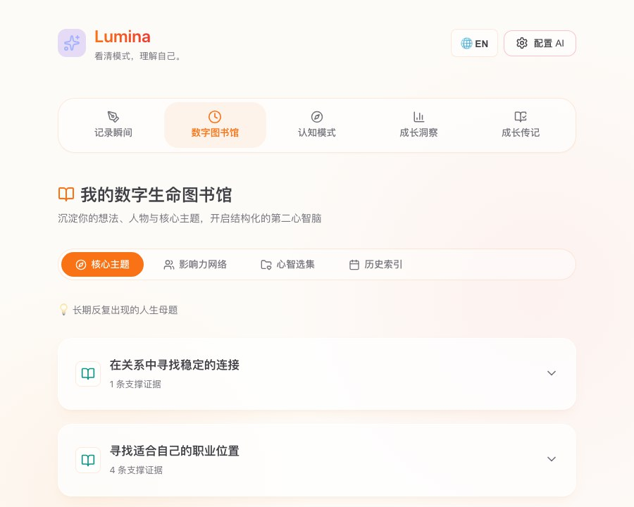
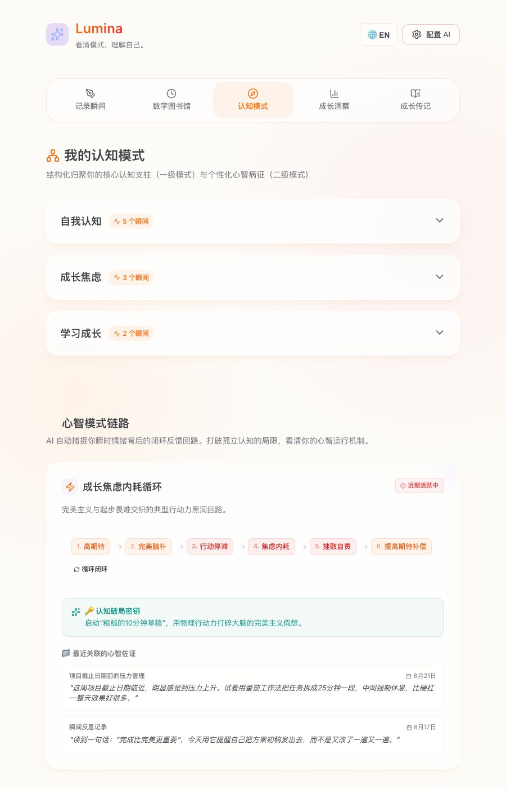
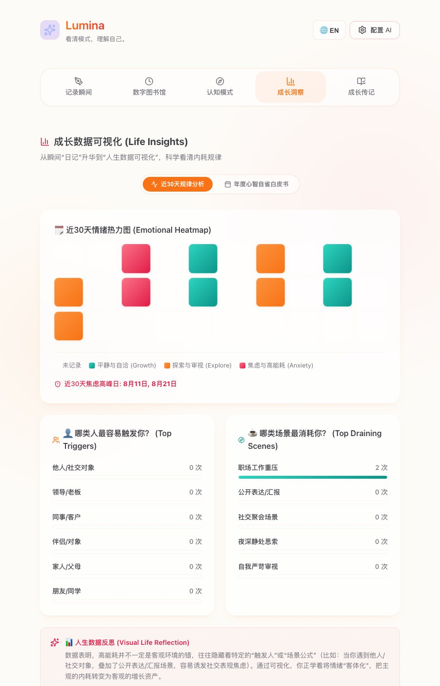

Designing and Shipping an AI Self-Reflection App, Solo
A self-initiated AI product — scoped through Columbia's "AI Offer Studio" product-development methodology and built solo with AI-assisted engineering — taking a real personal pain point from pain discovery to a working, publicly-shipped app.
TypeSelf-Initiated Product
RoleSolo Product Designer & Builder
TimelineMay 2026
StackReact · Vite · Gemini / OpenAI API
A note on context: built independently, outside any company or client engagement, using a structured product-development process from Columbia's "AI Offer Studio" course. Included because the process — pain discovery through shipped product — demonstrates product thinking and AI-native building ability directly relevant to product and growth roles.
3core MVP features shipped
2features scoped out, deliberately
5product surfaces built
1public GitHub repo
01Pain Discovery
The pain point was personal and recurring: real insights about my own emotions, behavior, or direction would surface suddenly — mid-conversation, mid-scroll, late at night — then get lost across screenshots, Notes, and chat threads before I could ever connect them into a pattern.
Validated as my own primary user — not a hypothetical persona, but a behavior I could observe in myself daily
Also observed the same pattern in peers navigating similar career-exploration and self-growth phases
Left unresolved, the cost wasn't just lost notes — it was repeating the same anxieties and behavioral loops without ever building a durable understanding of why
Problem statement, iterated. My first draft — "help young people understand themselves and reduce disorientation" — was too broad: no specific user, no real blocker. The version I shipped against: young adults navigating career exploration and rapid personal growth can't durably record, connect, or analyze the momentary insights and emotional reflections they generate daily, so the same patterns keep repeating instead of resolving into real self-understanding.
02Target User & Product Definition
I defined the user narrowly rather than defaulting to "anyone who journals":
20–30-year-olds in career exploration or early professional life — high information intake, frequent self-reflection, prone to overthinking and disorientation
Constrained by information overload and a lack of system, not a lack of self-awareness — they reflect constantly, they just have nowhere for it to accumulate
The product one-liner went through the same compression, cut down until an outsider could repeat it back:
An AI product that helps people who are overloaded with information and prone to self-doubt more easily record, connect, and analyze their own thoughts and behavioral patterns.
03MVP & Cut Features
Three core features, each mapped to a specific behavior change:
Capture Thoughts — from "insight, then forgotten" to "captured in seconds, kept long-term"
Analyze Patterns — from "repeating the same emotions with no idea why" to "seeing your own recurring behaviors"
Generate Reflection — from "I feel like I never change" to a visible, periodic record of how you have
Asked to keep only one, I kept Capture Thoughts — the entry point every other feature depends on.
Cut, deliberately. "AI Advice" (life/career recommendations generated from the data) and "Relationship Insights" (who energizes vs. drains you) were both scoped out — real value, but outside the MVP's core loop, and premature before the product had a base of self-understanding to build on.
04What I Built
Shipped as a working React app with a Gemini/OpenAI-backed analysis pipeline — bring-your-own-key, no backend required:
Capture — quick notes or longer journal entries, with prompts for when you don't know where to start.

Digital Life Library — recurring life themes surfaced automatically, each backed by linked entries.

Cognitive Patterns — the AI groups entries into recurring behavioral loops and surfaces one actionable break point per loop, backed by the specific entries that triggered it.

Life Insights — a 30-day emotional heatmap plus "what triggers you" and "what drains you" breakdowns, generated from entry data.
A fifth surface — an AI-generated "annual memoir" card — closes the loop from raw entries to a shareable growth narrative.
05Blockers & Iteration
As features accumulated, the product's information architecture started to overlap — it became unclear where one feature's value ended and another's began.
Diagnosed it as a conceptual/IA problem, not a technical one
Resolved by researching structuring approaches and iterating prompts and scope until each surface had a distinct, non-overlapping job — rather than shipping five vaguely similar dashboards
Current state: the core loop — capture → pattern detection → reflection — runs end to end; some peripheral flows are still rough. Being honest about that distinction is part of the exercise.
06Reflection & What This Demonstrates
30-second version: journaling apps capture feelings but not patterns. I built Lumina, an AI-driven growth companion, to turn scattered reflection into structured self-understanding — automatic emotion tagging, theme clustering, pattern detection, growth insights, and a generated life narrative.
User insight — defining a real, narrow problem instead of a broad, unfalsifiable one
Product design & information architecture — turning a single behavior into a coherent, multi-surface product
Judgment under scope pressure — cutting real, defensible feature ideas to protect the MVP
AI-native building — going from idea to a working, AI-integrated product, solo